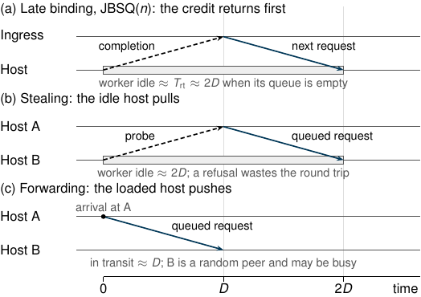

⚡ 现实挑战一：极短任务 vs 不可忽视的通信耗时
物理矛盾
- 任务纯执行极短：现代内存 KV（RocksDB / Redis）单次 RPC 计算执行仅 s = 1 ~ 10 μs。
- 网络传输开销显著：高速网卡单程时延 D ≈ 4.5 μs，往返 RTT 仍需 8 ~ 10 μs（SBB OSDI'26 实测）。
- 数量级完全对齐：通信与调度开销与任务纯执行时间处于同一微秒数量级。
- 传统宏观假设彻底失效：传统宏观调度中“通信与控制开销可忽略”的假设在微秒尺度下完全不成立。
📉 现实挑战二：微突发击穿与尾延迟敏感性
SLO 敏感
- 瞬时微突发 (Micro-bursts)：到达变异系数 CV = 1.0 ~ 2.5，局部核心极短时间内形成瞬时积压。
- 严苛尾延迟约束：99% 尾延迟通常要求 ≤ 50 μs（或 ≤ 5× 均值），单次跨机排队阻塞即可直接引发 SLO 违约。
核心矛盾结论： 微秒场景下不存在“免费调度”。任何跨机探测、转发和状态维护都伴随显著物理开销，必须纳入统一成本模型评估。

论文 Figure 1: 关键路径通信时延时序（晚绑定 Pull ≈ 2D, 纠偏 Forwarding ≈ 2D, 本地共享 < 0.02D）
关键路径物理时延关系：